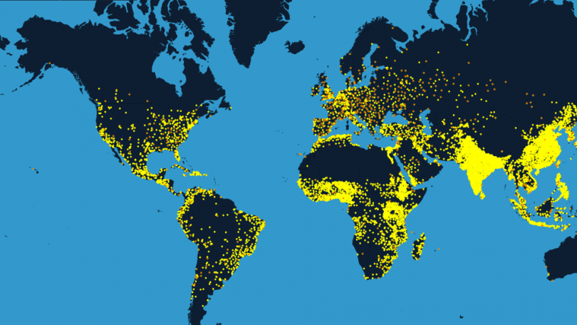

In this project I cleaned the sales also the world population data and performed several exploratory analysis In SQL server and thus, visualized the explorated data with Tableau and Power-Bi to align with the aim of the project.
Through strategic SQL queries, I transformed raw, disparate data into a well-structured format, ensuring data integrity.
Utilizing advanced statistical calculations within SQL, I conducted a thorough analysis of the sales dataset to uncover key insights into sales trends, extracting meaningful metrics such as profit margin and sales growth. The streamlined data cleaning process and in-depth exploration provided a comprehensive view of sales performance.

I performed some data cleaning, manipulation and exploration with the population demography, life expectancy, net migration, fertility rate and the death demography of the world data. The data provided me with some interesting insights into how the world population growth as performed, progressed or declined over the last 50 years.
I carried out some data exploration in SQL with the world Covid 19 datasets and gained some useful insights, i compared the output with the data published by the WHO validating the accuracy of my analysis. Some of the skills i used are the Joins, CTE's, Temp Tables, Windows Functions, Aggregate Functions, Creating Views, Converting Data Types and few others.
I connected my microsoft sql server to the power-bi desktop application to visualize the sales data explored and created dashboard that presented the dataset in multiple ways of representation.

I established a connection between my Microsoft SQL Server and the Power BI Desktop application to visualize world population data. I conducted an in-depth exploration and crafted a dynamic dashboard, presenting the dataset through diverse and insightful visual representations
I performed data cleaning with the global video game sales data and created some calculated field measures in order to come up with some advanced sales performance visualisation and make informed decisions with the generated insights.